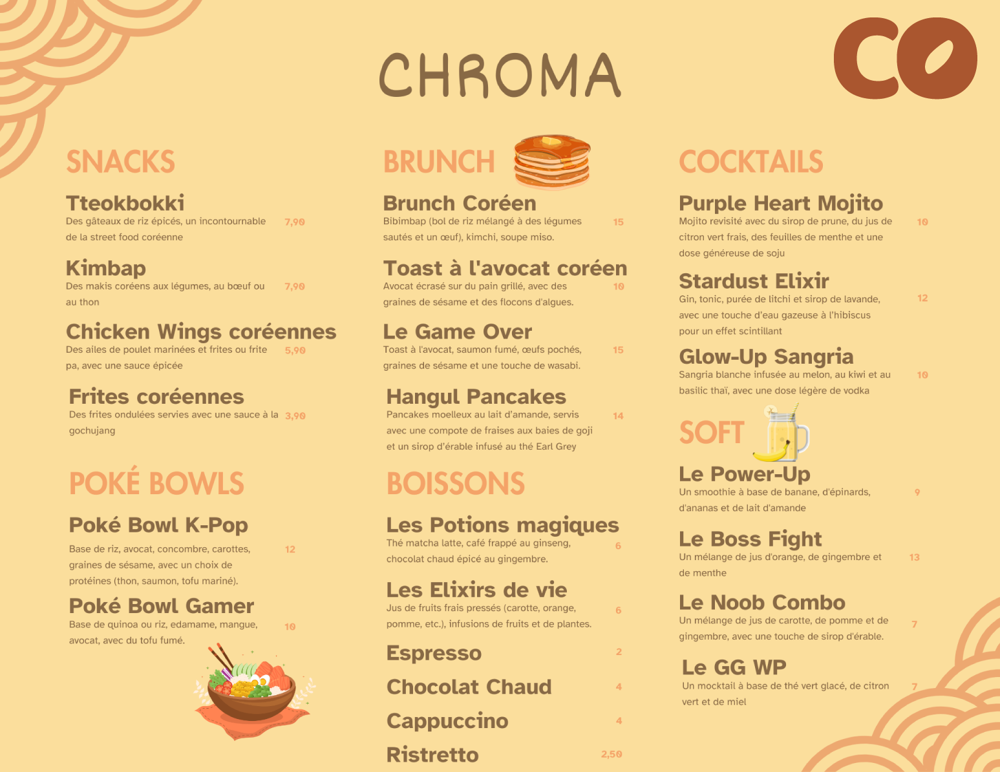
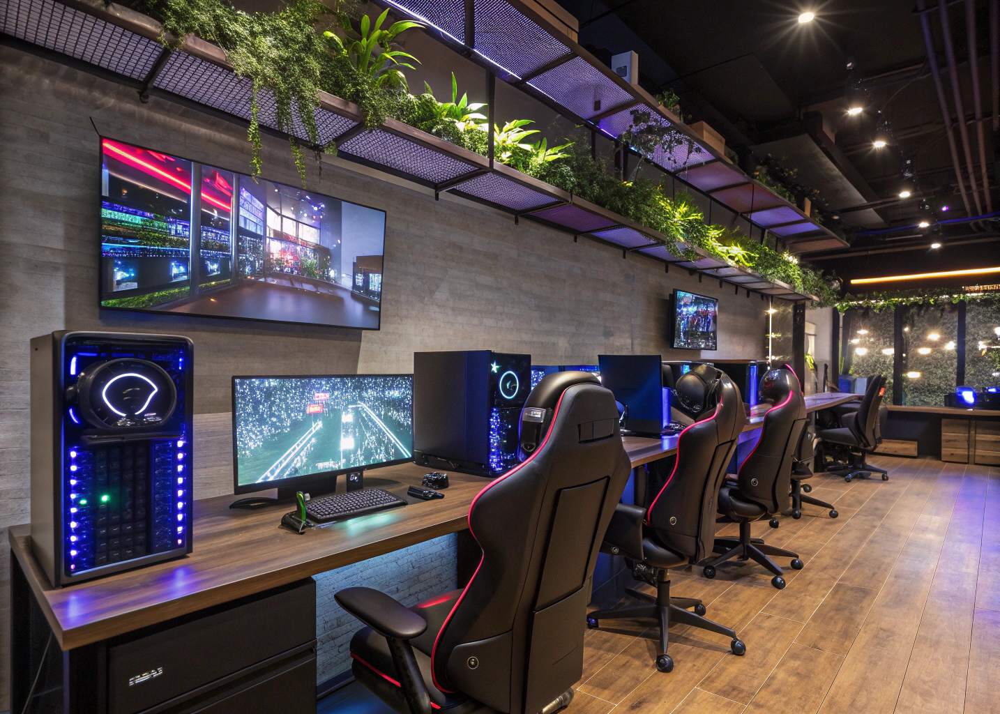
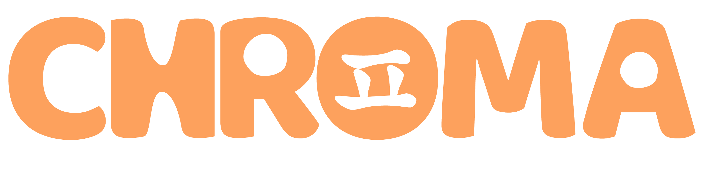
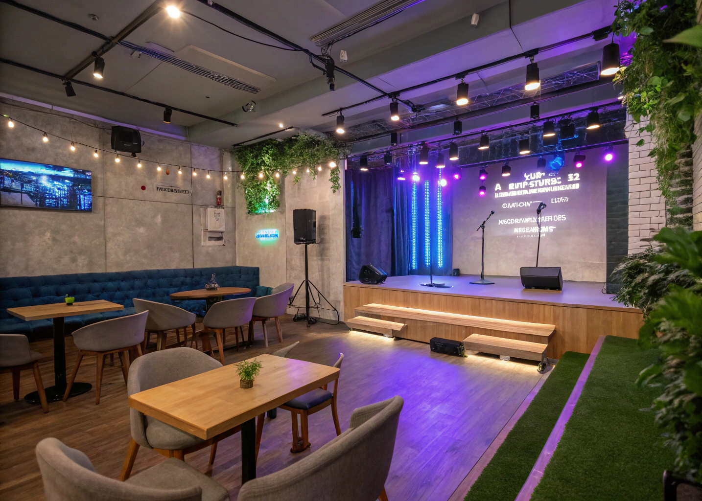

À propos de Chroma
Bienvenue chez Chroma, un cybercafé d’un nouveau genre où se rencontrent technologie, divertissement et culture. Plus qu’un simple café internet, Chroma est un lieu de vie hybride qui rassemble des passionnés de gaming, de musique et de pop culture dans une atmosphère chaleureuse. Notre vocation est de créer une communauté unie où chacun; gamer compétitif, fan de K-pop ou simple amateur de café; se sent chez soi, partage ses passions et fait de nouvelles rencontres.
Imaginé comme un espace innovant et convivial, Chroma combine trois univers en un seul endroit. Vous pourrez aussi bien y siroter un latte entre amis, participer à un tournoi de jeu vidéo endiablé que chanter sur les derniers hits K-pop lors d’une soirée à thème. Ce mélange unique fait de Chroma un lieu atypique et dynamique, porté par l’esprit de partage, la créativité et l’enthousiasme de sa communauté.
La partie Café – Convivialité & détente

Le café de Chroma est l’endroit idéal pour se relaxer et recharger ses batteries. Dans une ambiance cosy et colorée, installez-vous confortablement pour savourer un cappuccino, un thé parfumé ou une boisson fraîche préparée par nos baristas. Que vous fassiez une pause entre deux parties ou que vous veniez simplement profiter du wifi gratuit pour travailler ou étudier, notre espace café vous accueille du matin jusqu’au soir dans une atmosphère détendue et amicale.
- Boissons & snacks variés : choix de cafés, thés, sodas et encas sucrés/salés.
- Espace cosy : fauteuils confortables, coins banquette et tables conviviales.
- Ambiance geek & K-pop : décor moderne, musique d’ambiance pop culture.
- Lieu de rencontres : idéal pour retrouver des amis ou rencontrer d’autres passionnés.
Le Menu
La partie E-sport – Compétition & adrénaline
Place à l’action dans notre espace E-sport ! Chroma met à votre disposition une véritable arène de jeu équipée de PC ultra-performants, de consoles next-gen et d’écrans haute définition pour vivre vos parties à 100%. Que vous soyez joueur occasionnel ou compétiteur acharné, vous trouverez chez nous de quoi assouvir votre soif de jeu vidéo dans un cadre convivial.
- Équipement haut de gamme : PCs gaming, consoles, sièges ergonomiques.
- Tournois & compétitions : événements réguliers sur FPS, MOBA, sport, etc.
- Coaching & entraînement : sessions de coaching par des joueurs expérimentés.
- Retransmissions : diffusion de grandes compétitions e-sport internationales.
La partie  K-pop – Passion & communauté
Plongez au cœur de la culture K-pop dans l’espace le plus fun de Chroma ! Cet univers est dédié aux fans de musique et de pop culture asiatique, avec une programmation riche en événements pour célébrer ensemble votre passion. Retrouvez les diffusions de concerts, des soirées à thème et un coin lounge décoré aux couleurs des idols.
- Soirées thématiques : anniversaires d’artistes, dance challenges, quiz musicaux.
- Diffusion de concerts : retransmissions en direct ou en différé sur écrans géants.
- Espace fan-club : coin cosy pour échanger, partager news et photos.
- Culture asiatique : décor, playlists et snacks coréens pour une immersion totale.
En rassemblant café détente, e-sport et K-pop, Chroma est bien plus qu’un lieu : c’est une expérience unique à Bordeaux. Rejoignez-nous et vivez vos passions dans un espace convivial et passionnant !